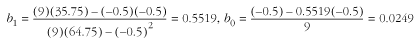

13.4 Description of Least-Squares
Estimation
Least-squares estimation determines estimators b1 and b0 for a function y (x)
= b1x + b0 so that y (x)
is a best-fit line through a set of n points (x0, y0 ), . . ., (xn - 1, yn - 1). A best-fit line
using least-squares estimation minimizes the sum of squared
vertical distances between each point (xi, yi
), i = 0, . . ., n - 1 and a corresponding point
(xi, y
(xi )) along y (x).
This is one way of defining a line so that each point (xi, yi
) is as close as possible to it.
Perhaps the most important application of
least-squares estimation is to make inferences about a
linear-form relationship between two variables. Given an
independent variable x and a
variable y that depends on it,
estimators b1 and
b0 allow us to
calculate the expected value of y at values of x for which we have not actually
observed y. This is
particularly meaningful when x
and y are related by a
statistical relationship , which is an inexact relationship. For
example, imagine how the number of new employees hired each
month at a consulting firm is related to the number of hours
the firm bills. Generally, as the firm hires more employees,
it will bill more hours. However, there is not an exact number
of hours it bills for a given number of employees. Contrast
this with a functional
relationship, which is exact.
For example, a functional relationship might be one between
the amount of money the firm charges for a project and the
time the project requires. This relationship is exact if we
assume that given a project of a certain length, there is an
exact amount of money the firm will charge.
To understand how least-squares estimation
works, recall that the distance r between two points (x1, y1) and (x2, y2) is defined as:
Since the points (xi, yi
) and (xi, y (xi
)) have the same x-coordinate,
the line between them is vertical. Consequently, this formula
tells us that the distance between these points is simply the
difference in y-coordinates, or
|yi - y (xi
)|. This difference is called the deviation of yi at xi.
Consider for a moment why the squared
deviations are used to compute b1 and b0 , and not simply the
deviations themselves. The reason is primarily anachronistic.
When we minimize the sum of the errors, we end up with
simultaneous equations that are linear. Before computers,
these were the easiest to solve. Another justification can be
made on the basis of probability theory. Simply stated, the
probability that b1
and b0 are optimal
for the observed values of (xi,
yi ) is proportional to a
negative exponential containing the sum of all (yi - y
(xi ))2. Thus, when
we minimize the summation of squared deviations, we maximize
the probability that b1 and b0 are good estimators as
well. Yet another justification is that by squaring the
deviations, more emphasis is given to larger deviations. Since
in a normal distribution there are fewer instances of large
deviations, this gives more weight to the deviations that
occur less frequently.
To compute b1 and b0, we use the following
formulas, where x and y are the coordinates of n points. These are derived from the
simultaneous equations we mentioned above but did not show.
The S (sigma) symbol in the formulas
is used as a concise way of saying "sum all."

Figure
13.5 illustrates computing b1 and b0 for a set of n = 9 points (x0, y0 ), . . ., (x8, y8 ). The results of the
calculations that need to be performed appear in the table.
Using the values from the table, b1 and b0 are calculated
using:

Substituting these values into y (x)
= b1x + b0 yields y (x)
= 0.5519x - 0.0249. Figure
13.5 plots this line with the points used to determine it.
From the standpoint of least-squares estimation, no other line
is a better fit for the data than this one. |